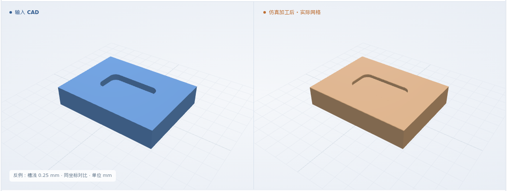
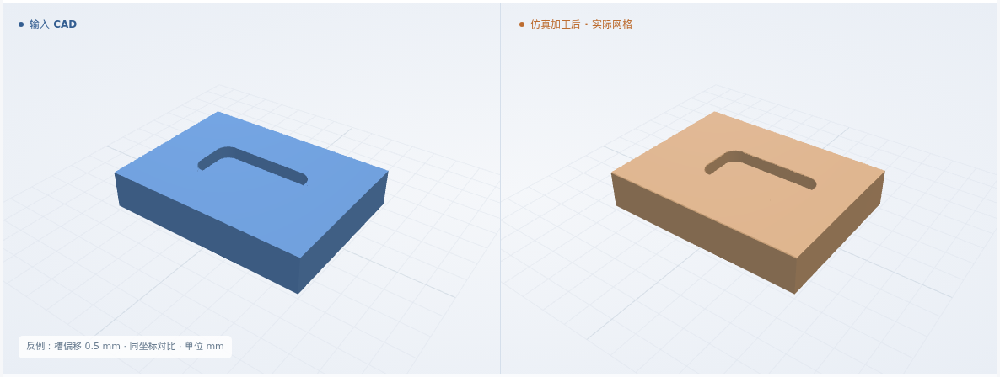

圆角单槽基准
槽 4 × 2 · 深 0.5 · R0.5 mm · 槽心 (4, 3)
最终网格 0.025 mm
体积 IoU99.9713%
本次新增：单槽与工艺卡工步绑定 · 平底铣刀分层去料 · 槽轮廓、深度和底面检查
体积 IoU = 原 CAD 与实际剩料的交集 / 并集
槽 4 × 2 · 深 0.5 · R0.5 mm · 槽心 (4, 3)
最终网格 0.025 mm
槽 4 × 2 · 深 0.75 · R0.5 mm · 槽心 (4, 3)
最终网格 0.025 mm
槽 4 × 2 · 深 0.5 · R0.5 mm · 槽心 (4.5, 3.5)
最终网格 0.025 mm
槽 4 × 2.5 · 深 0.5 · R0.5 mm · 槽心 (4, 3)
最终网格 0.025 mm
8 × 6 × 1.5 mm 来料 · 通用 XYZ · φ1 平底铣刀 · 6061-T6 材料标签。
毛坯 → 早期去料 → 分层加工 → 接近完成 → 完成
三维回放暂不可用；上方实际图片和形状下载仍可查看。
P1：4 × 2 × 0.5 mm，R0.5；其余正常用例复用该流程
工艺卡 PDF + 核对录入 + CAD + 要求 + 资源
结构化工艺卡 · PDF 同步存档↓输出核对槽、工步和资源；明确深度、刀具、进给与切削策略，缺项或冲突则停止。
准备检查通过 ↗独立读取原 CAD；核对刀路范围、实际切深顺序、进给和每层覆盖，导出 NC 原样保留。
NC 与方案一致 ↗执行同一 NC 去料；比较整体 IoU，再测槽轮廓、槽深、底面与剩余底厚。
几何比对与测量 ↗轮廓偏差 ≤0.1 mm、槽深 ±0.1 mm、底面采样高差 ≤0.1 mm、剩余底厚 ≥0.1 mm。11 个截面与 25 个槽底探测点，2 个网格步长作为数值保护带。
软件条件 ↗ · 完整结果 ↗制造验收依据仍待补齐；粗糙度、真实装夹和材料物理尚未验证。
正常入口均先拒绝错误 NC；专用反例实际去料后，浅铣、过深和错位分别被逐项检查检出。
仅修改 P1 的 NC；仍与原 CAD 比较
最终网格 0.025 mm

仅修改 P1 的 NC；仍与原 CAD 比较
最终网格 0.025 mm
仅修改 P1 的 NC；仍与原 CAD 比较
最终网格 0.025 mm
